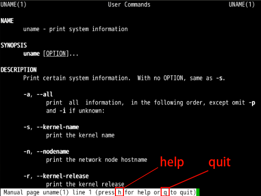
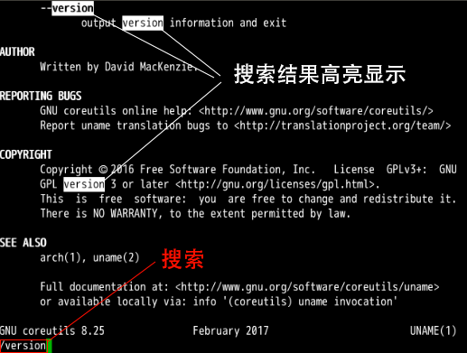
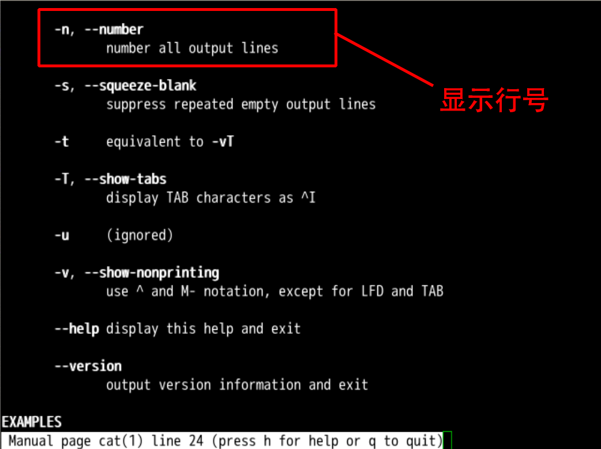
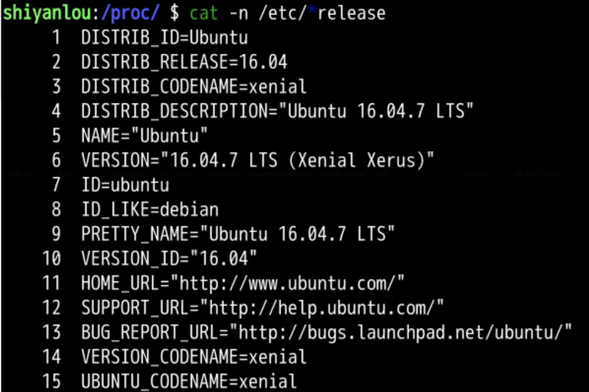
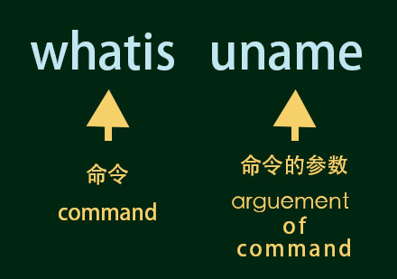
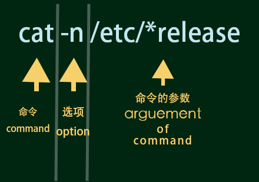
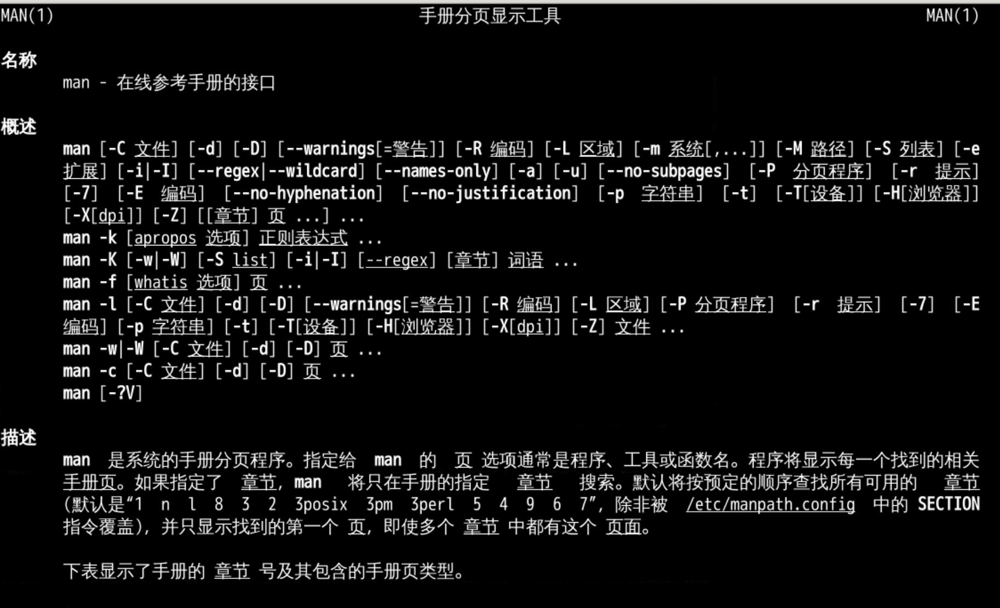
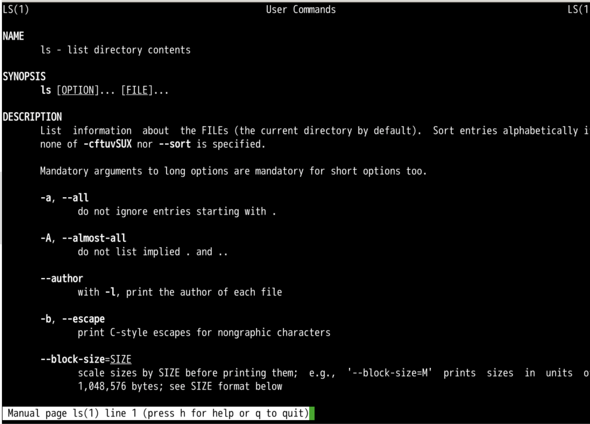

whatis whatis
最详细的命令细节 😍man uname

/ 进行搜索/version 回车version 相关的内容
--version 选项查询版本号uname --version
man cat
Foward 一页Backward 一页-n 参数


cat -n /etc/*release

参数是 /etc 目录下以 release 结尾的文件
命令的结构
能否查询关于手册的手册呢？
man man

man ls
